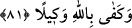
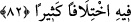

81- «Başüstüne» derler, ama yanından ayrılınca onlardan bir kısmı, senin
dediğinden başkasını gizlice kurar. Allah da onların gizlice kurduklarını yazar. Sen
onlara aldırma ve Allah’a dayan; sana vekil olarak Allah yeter.
(Onlara bir şey emrettiğin zaman, “Başüstüne” Emredersin, bize itâat etmek düşer
“derler, ama yanından çıkıp ayrılınca onlardan bir kısmı, senin dediğinden başkasını
gizlice kurar.” Yâni, Ey Muhammed, onlar kendilerine söylediğinin tersini planlarlar.
Yâhut da sana verdikleri itâat taahhüdünün aksine hareket ederler, demektir.
İnsanın derine daldığı düşünceler çoğu zaman geceleyin zihne gelir. Çünkü geceleyin
zihin daha duru, meşgûliyetler daha azdır. Onun için derin düşünmeye Arapça’da
“mübeyyet”, gece kurgusu adı verilmiştir.
“Allah da onların gizlice kurduklarını yazar.” Kendilerine karşılıklarını vermek için
onu amel defterlerinde tesbit eder. “Sen onlara aldırma” onlardan yüz çevir, onları
fazla önemseme. Her işte, özellikle onlar hakkında “Allah’a dayan.” tevekkül et. “Sana
vekil olarak Allah yeter.” Allah onların seni lekelemeye çalışmaları konusunda sana
yeter ve İslâm güçlenip yardımcıları kuvvetlenince senin intikamını onlardan alır.
“Vekîl” kendisine havâle edilen işte ne tedbir göreceğini bilen demektir.
82- Kur’ân’ı gereği gibi düşünmüyorlar mı? Eğer o, Allah’tan başkası tarafından
gelmiş olsaydı onda birçok tutarsızlık bulurlardı.
“Kur’ân’ı gereği gibi düşünmüyorlar mı?” Kur’ân’ın ihtiva ettiği mânâları inceden
inceye düşünüp içindekileri anlamaya çalışmıyorlar mı? “tedebbür” kelimesi aslında
bir şeyin sonuna bakmak, âkıbetinin nereye varacağını düşünmek demektir. Sonra her tür
düşünme için kullanılır olmuştur. “Eğer o Allah’tan başkası tarafından gelmiş
olsaydı” kâfirlerin iddiâ ettiği gibi beşer kelâmı olsaydı “onda” manâ bakımından
zıtlık, nazmında farklılık gibi, “bir çok tutarsızlık bulurlardı.” Bir kısmı fasîh, bir
kısmı yetersiz; bir kısmına karşı çıkmak zor, bir kısmına kolay olurdu. Geleceğe dâir
haberlerin bir kısmı, gerçeğe uygun bir kısmı gerçek dışı olurdu. Akıl, Kur’ân’ın bâzı
hükümleriyle uyuşur, bâzılarıyla da uyuşmazdı. Beşer kuvvetinin noksanlığından
hareketle mantıken varılacak hüküm de buna delâlet etmektedir.
Peki “Allah kelâmının bir kısmı bir kısmından daha beliğdir” demek câiz midir?